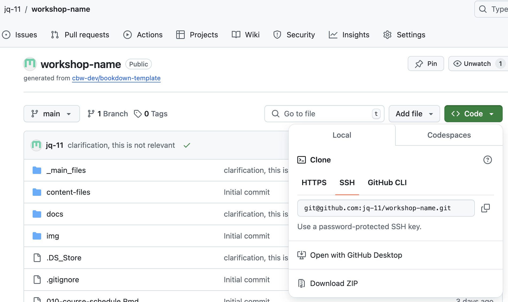

Git Clone!#
Now that we can get updates from our online repository (on GitHub!), let’s copy it into locally, so that we can edit locally. That is, we will be git cloning the template onto our local computer.
Navigate to where in your local file system you want to have your workshop in Terminal/Windows PowerShell/Command Prompt.
Recommended Workshop Location:
CBW recommends that you create a folder within your Documents folder called “CBWGitHub”, which is where you will place your CBW workshop project files.
In Finder (macOS)/File Explorer (Windows):
Navigate to ‘Documents’
Create a folder and name it “CBWGithub”
**Copy the file address of the CBWGithub folder:**On Windows
Using File Explorer, find your “CBWGithub” folder.
Right click the “CBWGithub” folder and press “Copy as path”.
If you are currently inside the “CBWGithub” folder, you can right click on it’s name in the header and press either “Copy Address” or “Copy Address as Text”
On Mac
Go to the folder holding your “CBWGithub” folder (recommended to be your Documents folder)
Right-click (or tap your mouse pad with 2 fingers) the “CBWGithub” folder and press the “Options” keyboard key (in the bottom left).
While holding the “Options” key, go the the 4th section from the top, and click “Copy “CBWGithub” as Pathname”.
You may want to paste your file address somewhere where you can quickly find it, so it is easier to navigate to in the future.
Tip
Navigate to your workshop folder in Terminal:
Navigate using the “cd” command. For example, if you used the recommended instructions, you should run “cd” and paste (since you already copied the file address).
If you didn’t use the recommended path and folder name, you can use “cd + tab” (where tab is the keyboard key, “tab”) to try to find your path and folder.
Return to your workshop repository on GitHub. Press
< > Code, which is the leftmost tab in the header bar on GitHub.
Find the ssh for your workshop repository:
a. Click the green button entitled
< > Codeands see the drop down options.b. Click the SSH tab, as seen below, and then copy the text below it. The text should be something like git@github.com:bioinformaticsdotca/WORKSHOP-NAME.git, as seen below.

c. Edit and run the following command in Terminal/PowerShell/Command Prompt, within the folder you want the workshop folder to be in. (Recall that we navigated there in step 1.)
Warning
EDIT THE FOLLOWING COMMAND!
You can essentially type “git clone “ and then paste the SSH url, and then hit enter. Below, you must delete the entire
git@github.com:bioinformaticsdotca/[YOUR WORKSHOP NAME].gittext, and replace it with the text you copied.git clone git@github.com:bioinformaticsdotca/[YOUR WORKSHOP NAME].git
You should be ready to go! With your given permissions, you should be able to git push (put your local edits on GitHub) and git pull (pull edits on GitHub to your local computer) fine!
Tip
Git Version Control Tip!
Consider having only one team member (or perhaps your RC) make git pushes or control pull requests. To avoid merge conflicts, designate 1 team member to control actual changes to your workshop repo. Other team members can fork or create branches, and create a pull request that the designated team member can check and overlook.
Now that we have our workshop website’s files locally, we finally have what we need to deploy our website, and make it live! Next step: How to Deploy Your Website
Tip
Consider checking out Git Commands for an explanation on how to update your GitHub repository using git commands in Terminal.
Oops, I Git Cloned the Wrong Repository and I Want to Delete it from my Local Computer!
That’s ok! To delete the entire local repository and the folder itself, run the following command:
rm -fr folder-path
where "folder-path" is a file address to the git cloned folder/repository that you want to delete.